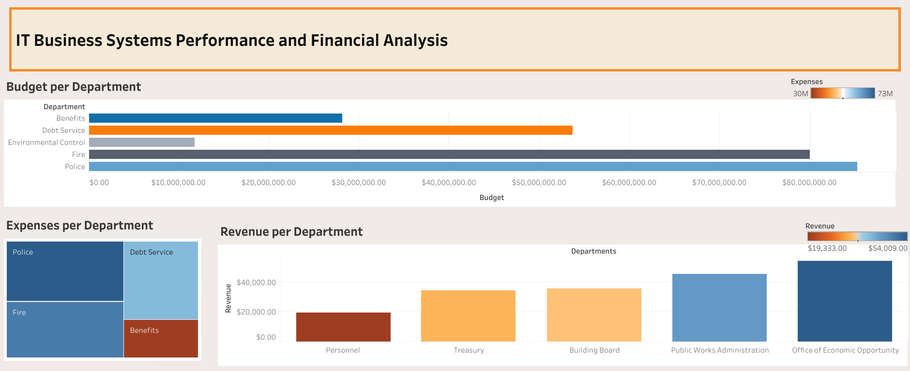
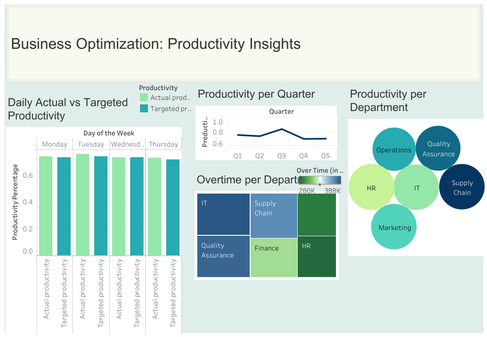
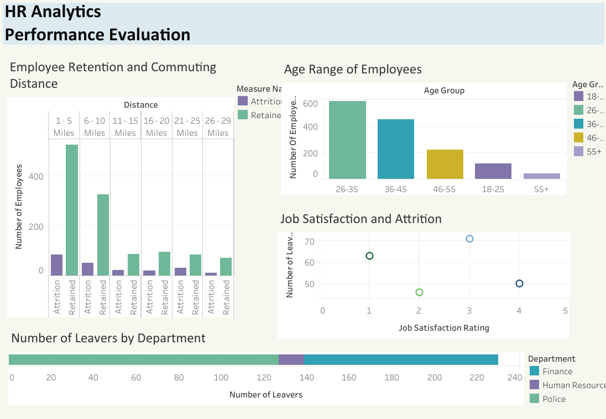

About
Jenan Meri
Hello, and welcome to my portfolio! As a data analyst, I am eager to contribute my skills and
expertise to support operational excellence in the Information Technology domain. With a
collaborative mindset and a focus on bridging technical and non-technical realms, I am committed
to facilitating seamless cooperation and coordination across diverse teams. My passion lies in
analyzing processes, enhancing communication, and leading the implementation of innovative
solutions. I thrive on leveraging technology to optimize operations and drive impactful
outcomes. I am highly proficient in SQL, Excel, and other
data visualization tools, such as Tableau.
I am committed to delivering high-quality results and driving impactful outcomes in
every project I undertake.

In my IT Business Systems Analysis and Financial Performance dashboard project, I delved into a
comprehensive approach using Excel, SQL, and Tableau to streamline operations and enhance
financial insights. With Excel, I meticulously cleaned and prepared data, ensuring its accuracy
and reliability. Utilizing SQL queries, I conducted in-depth analysis to uncover critical trends
and patterns within the financial dataset, facilitating informed decision-making. Through
Tableau visualizations, I created intuitive and interactive dashboards, empowering stakeholders
to explore complex data effortlessly. My commitment to excellence in data analytics enables
organizations to optimize processes, drive efficiency, and achieve financial objectives
effectively.

In my Business Optimization Productivity Insights dashboard project, I harnessed the power of
Excel, SQL, and Tableau to deliver actionable insights that drive efficiency and productivity.
With Excel, I meticulously organized and cleansed data, ensuring its accuracy and reliability.
Leveraging SQL queries, I conducted deep dives into the dataset, extracting valuable insights
and identifying areas for improvement. Through Tableau visualizations, I created dynamic and
intuitive dashboards, enabling stakeholders to explore data trends and make data-driven
decisions with ease. By combining my expertise in data analytics with innovative visualization
techniques, my dashboard empowers organizations to streamline operations, enhance productivity,
and achieve their business goals.

In this SQL project, I delve into a government's HR department data to
quantify statistics related to employee attrition. My goal was to
understand the reasons behind employees leaving and explore potential
strategies for retention. I used SQL to query the data and
extract relevant information such as attrition rates based on factors like
distance from home, age groups, and job satisfaction. The insights that I gained
from this analysis can provide valuable input for making informed decisions
and implementing measures to prevent employee turnover.

In my Tableau portfolio, I demonstrate my ability to transform
datasets into valuable insights. As
data becomes increasingly abundant, I believe the real challenge lies
in understanding, processing, and extracting meaningful value from it. I
believe in the power of turning raw data into comprehensible visualizations
that not only communicate information effectively but also provide actionable
insights. Using Tableau, I navigate through data sets, uncovering trends,
patterns, and key metrics. In a world where data is everywhere,
my focus is on leveraging Tableau to not only visualize information but also
to communicate it in a way that adds significant value to decision-making processes.

In my GitHub portfolio, I showcase expertise in SQL and Python, emphasizing the vital
skill of turning raw data into actionable insights. Through SQL queries, I
navigate complex datasets, extracting valuable information from databases.
My projects range from quantifying Healthcare statistics to analyzing attrition rates.
My projects prioritize clear and accessible SQL code, reflecting my
commitment to effective communication of data-driven insights. I invite you to my
GitHub repository for concise examples of how I leverage SQL to transform
data into valuable knowledge.